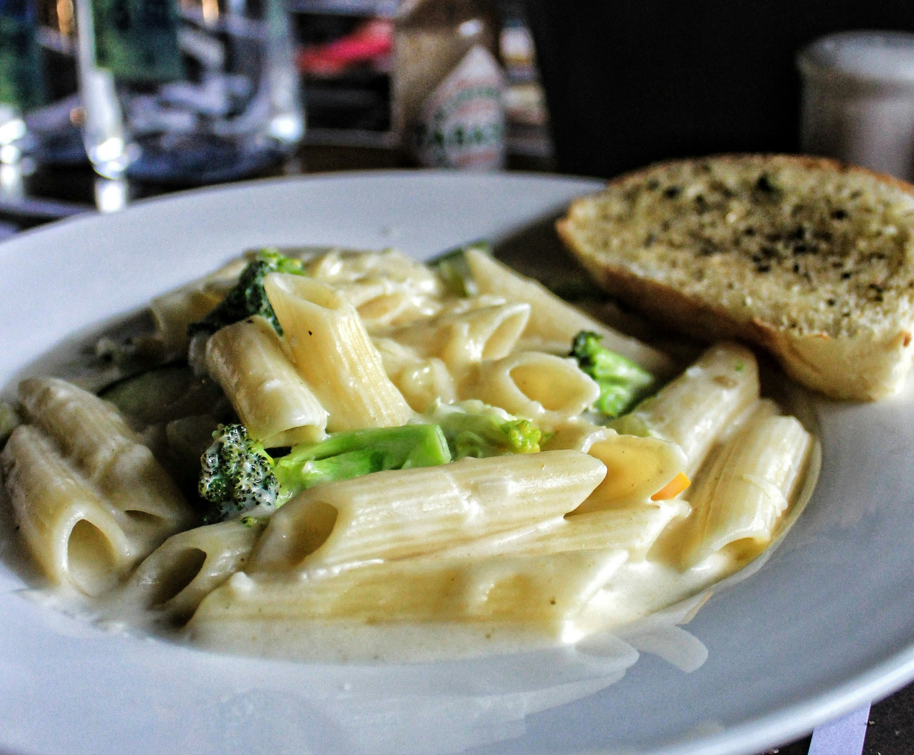

Creamy Brocoli Pasta Recipe

Description
Perfectly sautéed broccoli and mini shells are tossed together in a rich parmesan cheese sauce to make this yummy Creamy Broccoli Pasta! It’s a quick and easy family favorite that comes together in just under 30 minutes!
Ingredients
- Salt and Pepper
- Garlic
- Italian Seasoning
- Red pepper flakes
- Mini Shells
- Heavy Cream
- Olive Oil
- Butter
- Parmesan
- Broccoli
- Onion
Steps
- Cook The Pasta
- Sauté the onion and garlic
- Sauté the brocoli
- Mix n the heave cream with 1/2 cup pasta water
- Add spices to taste
- Bring to boil, turn down heat and let simmer until sauce thickens
- Add parmesan and let cook for another minute
- Garnish and serve
Home Page